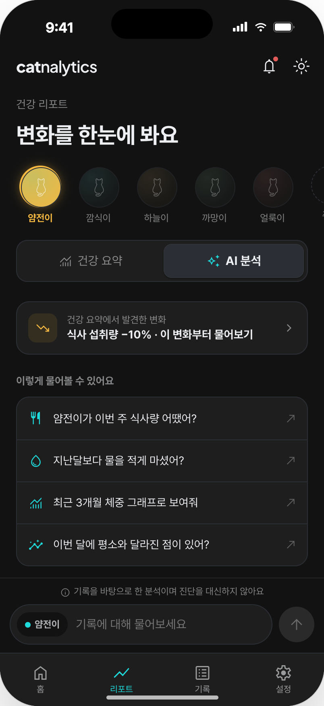

오늘 할 일
오늘 챙길 것만, 시간순으로
아침 약, 저녁 영양제, 다음 주 병원 예약까지.
오늘 챙길 것을 시간순으로 보여주고, 체크하면 바로 기록으로 남아요.
- 오늘 챙길 돌봄 한눈에
- 병원·미용 일정 알림
- 체크하면 자동으로 기록
기록
고양이 건강을, 감이 아닌 기록으로
식사·음수·화장실·체중부터 투약·증상·간식·병원 방문까지.
메모장, 사진첩, 카톡에 흩어지던 기록을 고양이별 타임라인에 모아요.
- 8가지 기록 항목
- 날짜별 타임라인
- 병원 방문·비용 기록
리포트기록이 쌓이면,
기록이 쌓이면,
변화가 보여요
물을 언제부터 더 마시기 시작했는지, 체중이 한 달 사이 얼마나 줄었는지. 식사·음수·화장실·체중의 흐름을 기간별 그래프로 보여드려요.
- 4가지 핵심 수치 그래프
- 주·월 단위 변화 비교
- 병원에 보여줄 수 있는 요약
AI 분석찾고 싶은 기록을,
찾고 싶은 기록을,
질문으로
“얌전이 마지막으로 병원 언제 갔어?” “이번 달 물 평균 얼마나 마셨어?” 말로 물어보면, 쌓인 기록에서 바로 찾아 답해드려요.
- 말로 묻는 기록 검색
- 병원·투약 이력 바로 확인
- 기간별 평균·횟수 계산
